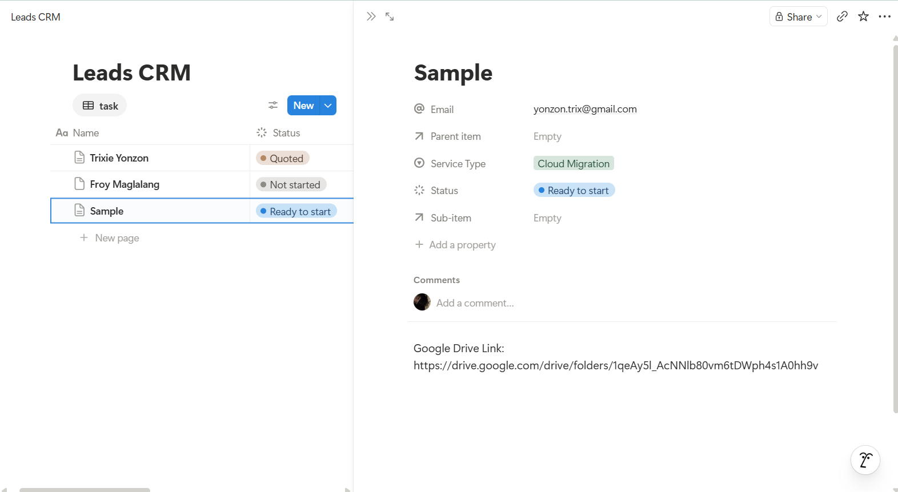
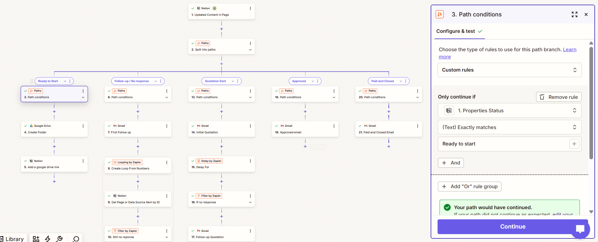
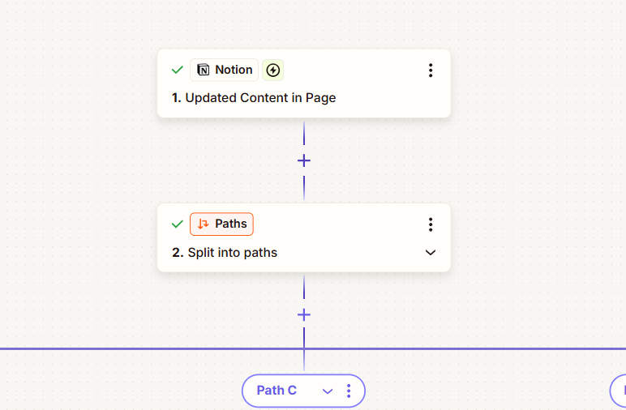
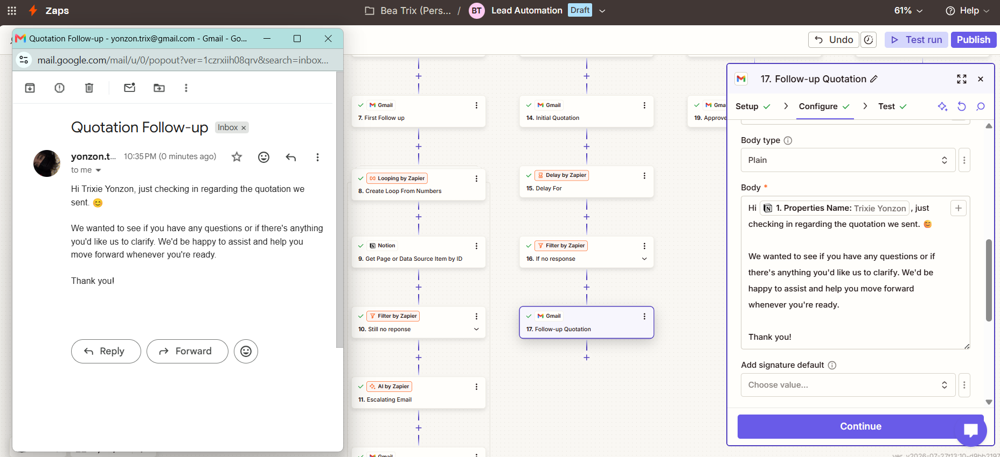

AI Lead Management & Nurturing Automation
An intelligent lead automation system built with Zapier that automatically classifies incoming leads, routes them through multiple business workflows, and executes personalized email sequences based on lead behavior and qualification.
Overview
This workflow eliminates repetitive lead management tasks by integrating Notion, Gmail, and Zapier's advanced workflow logic. Depending on each lead's status and attributes, the system automatically performs different actions such as creating CRM records, sending targeted emails, delaying follow-ups, and enriching lead information.
Project Information
Automation Developer
Workflow Architect
Technologies & Tools
Challenges & Solutions
Managing Multiple Lead Scenarios
Challenge: Different lead statuses required different business actions, making manual processing repetitive and prone to mistakes.
Solution: Implemented multiple Zapier Paths to automatically route leads into the correct workflow based on predefined conditions.
Maintaining Consistent Lead Follow-Up
Challenge: Sales representatives often forgot to send follow-up emails or contacted leads at inconsistent intervals.
Solution: Added automated email sequences using Gmail with delays and filters to ensure every lead receives timely communication.
Automating Lead Information Management
Challenge: Updating lead information and creating supporting documents manually consumed valuable time.
Solution: Integrated Notion and Google Drive to automatically create folders, update records, and keep lead information organized throughout the workflow.
Architecture & System Design

The workflow begins whenever a lead record is updated inside Notion.

Zapier Paths evaluate lead information and direct each lead into the appropriate automation branch.

Depending on the workflow path, the system creates folders, updates Notion pages, applies delays, or loops through lead records.

Personalized Gmail messages are automatically sent according to each lead's workflow stage.